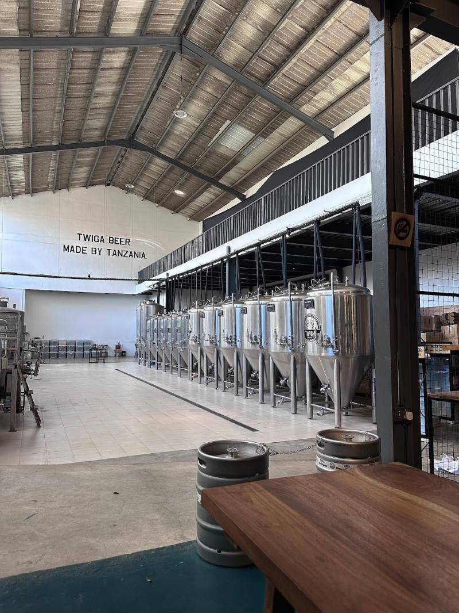
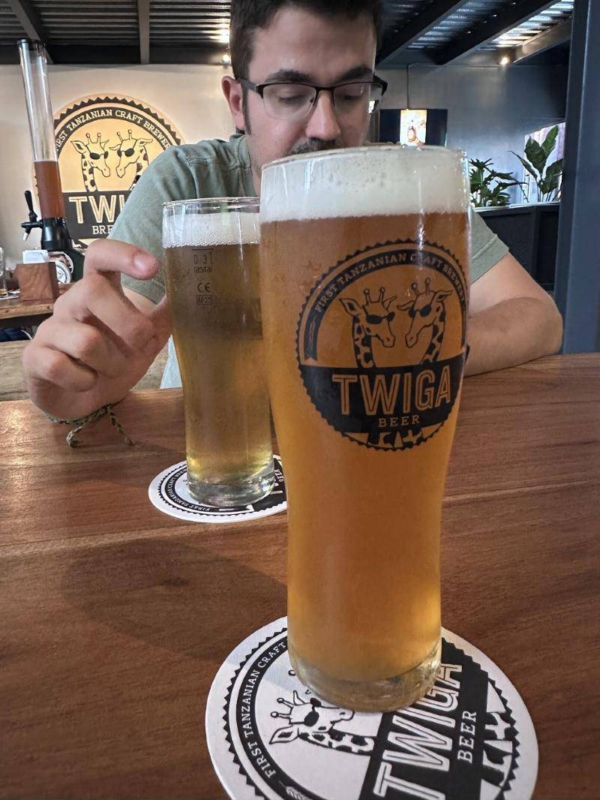

De Pontevedra a Arusha: visitamos Twiga, a primeira cervexaría artesá de Tanzania

Un dos nosos cervexeiros achegouse a Twiga Brewery, en Arusha, a primeira cervexaría artesá de Tanzania. Isto foi o que atopou.
Os cervexeiros caseiros temos un problema: alá onde imos, buscamos cervexa. Así que cando un dos nosos viaxou a Tanzania, a parada estaba clara. O 30 de agosto de 2026 achegouse a Twiga Brewery, en Arusha, ás portas dos grandes parques do norte do país.
A primeira cervexaría artesá de Tanzania
«Twiga» significa xirafa en suahili, e por iso as dúas xirafas con lentes de sol que presiden o logo. Fundada en 2015, Twiga preséntase como First Tanzanian Craft Brewery, a primeira cervexaría artesá do país. Non é pouca cousa nun mercado no que a gran industria, encabezada por Tanzania Breweries, controla arredor do 80 % da cervexa.

A sala de fermentación
Desde o taproom vese a nave de produción: unha fileira de fermentadores cilindrocónicos de aceiro inoxidable e, na parede, un letreiro que o resume todo: Twiga beer, made by Tanzania. Para quen fai cervexa nunha pota na cociña, ver un equipo así dá unha envexa sa considerable.
O taproom e a cervexa
A entrada, con barrís reutilizados como maceteiros e os rótulos de pub, food, bar, xa avisa do que hai dentro: un espazo amplo onde probar a cervexa ao lado de onde se fai. Entre as súas cervexas están a Twiga Ale e a Twiga Stout.

Se vas por Arusha
Twiga está no centro comercial Majengo AIM Mall, en Arusha, e é unha parada moi recomendable antes ou despois dun safari. Consulta horarios e visitas guiadas na súa web, twigabrewery.com.
E se de volta á casa che pica o bicho de facer a túa propia cervexa, aquí estamos.
- #viaxes
- #cervexarías
- #tanzania